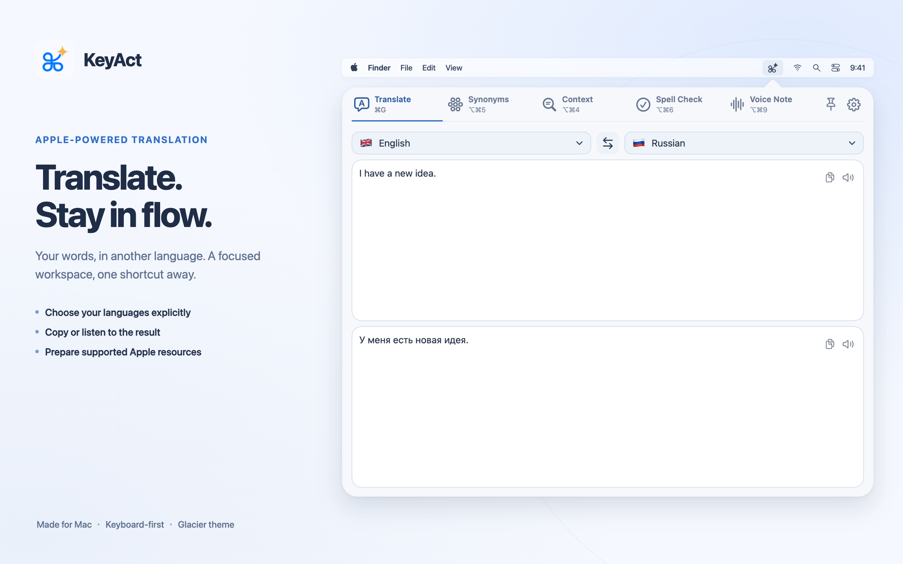

Start with your languages
Choose the source and destination explicitly. The setup assistant checks resources for each tool; KeyAct never silently swaps in another language.
Understand language resources →KeyAct · macOS 15 or later
Translate with Apple, explore a word, or keep a thought as a voice note. Choose your languages and open the tools you need from the Mac menu bar.

Choose the source and destination explicitly. The setup assistant checks resources for each tool; KeyAct never silently swaps in another language.
Understand language resources →Related words, word classes, macOS spelling and dictionary lookup. A bundled offline conjugation catalog covers verbs in 14 languages, not every word in those languages.
See what each tool does →Save audio, transcribe through an available on-device speech route, or do both. Choose the exact recognition language before recording.
Set up a voice note →Choose visible tabs, shortcuts, window height and theme. Add URL or HTTP actions; the App Store edition also supports executable scripts you install yourself.
Understand scripts and editions →Apple's translation, word-analysis, dictionary and speech resources have different language coverage. Some need an initial download; not every Apple resource has an in-app installer. Related words are not guaranteed interchangeable synonyms, and Context is not a complete grammar checker. Optional online dictionary fallback and your HTTP actions require internet.
The interface is currently in English. Russian setup and troubleshooting help is available. The full local edition can run typed shell commands and use Accessibility; those capabilities are not part of the sandbox App Store edition.
For safe help, include the version, build, tool and selected languages—never private text, recordings or credentials. Open support.